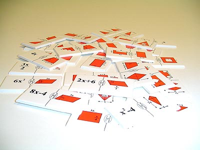

Descripción: Es un domino de piezas de cartón blanco, con dibujos de figuras planas conocidas y de fórmulas de cálculo de áreas, para emparejar las que se corresponden.
Utilidad: Consolidar el conocimiento de las fórmulas aprendidas de las áreas de algunas figuras planas. Adquirir dominio del cálculo que corresponde como complemento de la medida de la superficie.
Nivel: Primer ciclo de ESO.
Procedencia: Construcción propia.
|
 |